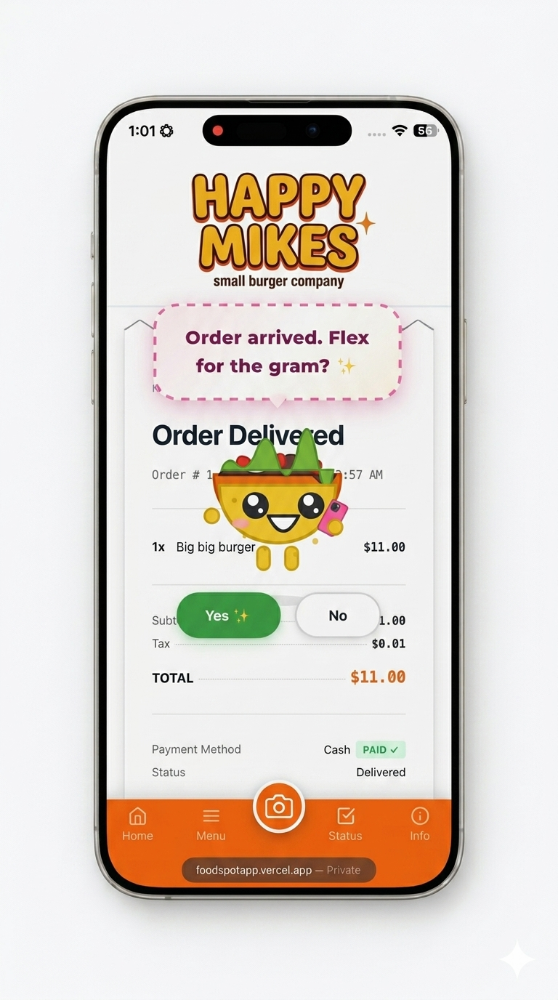

3 pasos para empezar
100% sin código
1
Tu menú
Crea en segundos

2
Configura pagos
Recibe el 100%

3
¡Vende!
Comienza a recibir pedidos

100% sin código
Crea en segundos
Recibe el 100%
Comienza a recibir pedidos
